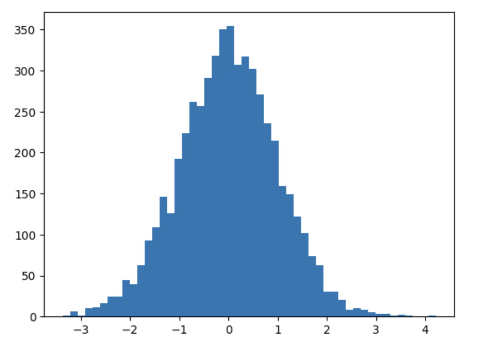
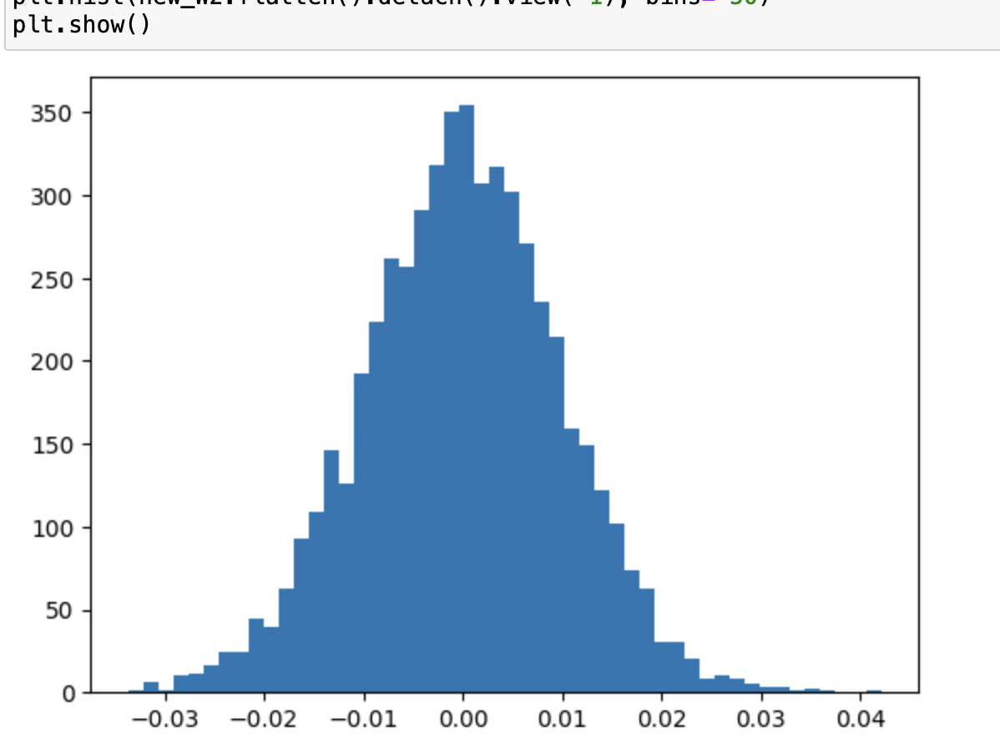
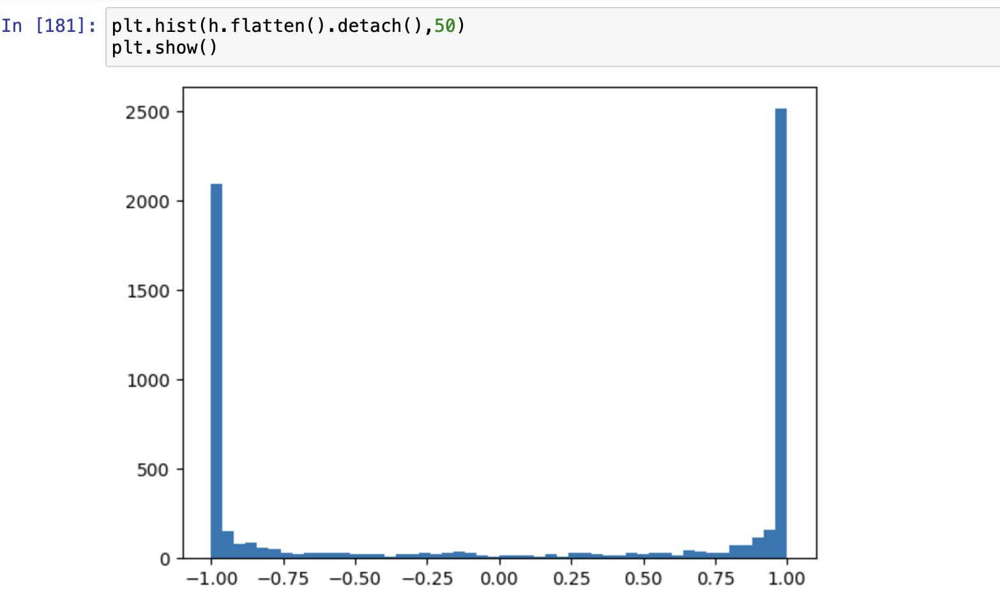
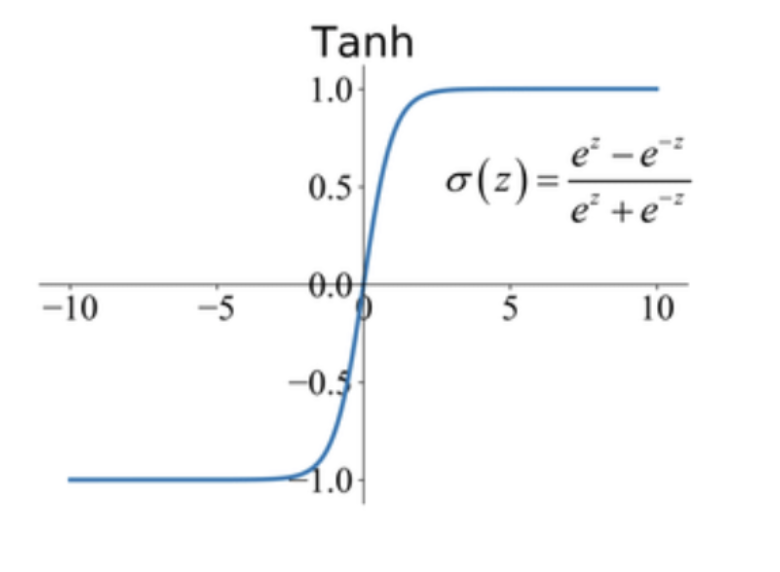
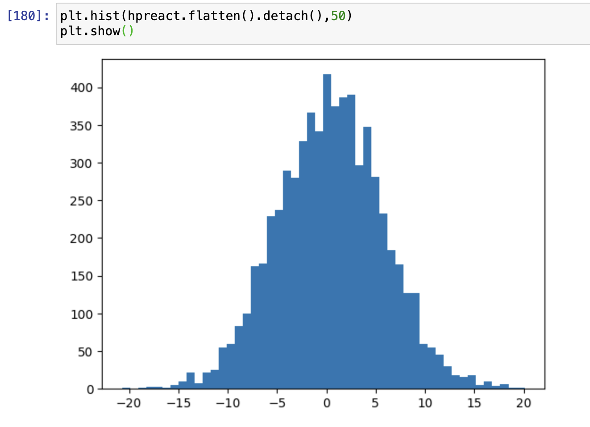
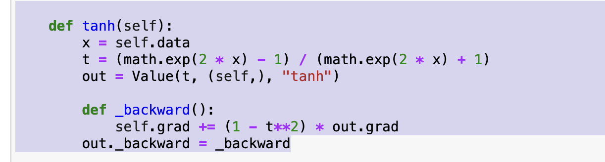
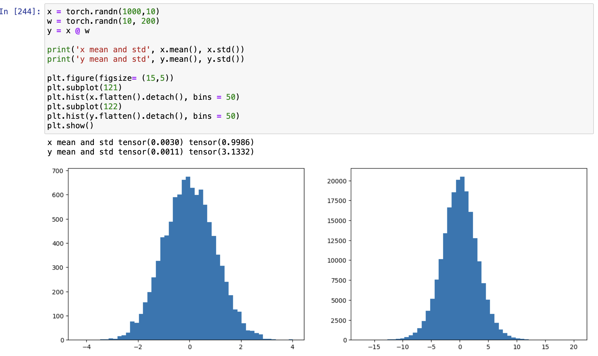
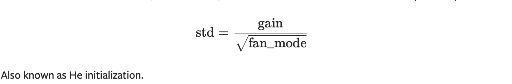

Problem
Consider a simple MLP that takes in combined 3 character embeddings as an input and we predicts a new character.
# A simple MLP
n_embd = 10 # the dimensionality of the character embedding vectors
n_hidden = 200 # the number of neurons in the hidden layer of the MLP
g = torch.Generator().manual_seed(2147483647) # for reproducibility
C = torch.randn((vocab_size, n_embd), generator=g)
W1 = torch.randn((n_embd * block_size, n_hidden), generator=g)
b1 = torch.randn(n_hidden, generator=g)
W2 = torch.randn((n_hidden, vocab_size), generator=g)
b2 = torch.randn(vocab_size, generator=g)
# BatchNorm parameters
bngain = torch.ones((1, n_hidden))
bnbias = torch.zeros((1, n_hidden))
bnmean_running = torch.zeros((1, n_hidden))
bnstd_running = torch.ones((1, n_hidden))
parameters = [C, W1, W2, b2]
print(sum(p.nelement() for p in parameters)) # number of parameters in total
for p in parameters:
p.requires_grad = True
# same optimization as last time
max_steps = 200000
batch_size = 32
lossi = []
for i in range(max_steps):
# minibatch construct
ix = torch.randint(0, Xtr.shape[0], (batch_size,), generator=g)
Xb, Yb = Xtr[ix], Ytr[ix] # batch X,Y
# forward pass
emb = C[Xb] # embed the characters into vectors
embcat = emb.view(emb.shape[0], -1) # concatenate the vectors
# Linear layer
hpreact = embcat @ W1 + b1 # hidden layer pre-activation
# Non-linearity
h = torch.tanh(hpreact) # hidden layer
logits = h @ W2 + b2 # output layer
loss = F.cross_entropy(logits, Yb) # loss function
# backward pass
for p in parameters:
p.grad = None
loss.backward()
# update
lr = 0.1 if i < 100000 else 0.01 # step learning rate decay
for p in parameters:
p.data += -lr * p.grad
# track stats
if i % 10000 == 0: # print every once in a while
print(f'{i:7d}/{max_steps:7d}: {loss.item():.4f}')
lossi.append(loss.log10().item())
When we train this simple MLP, the output loss over 200,000 iterations
0/ 200000: 27.8817
10000/ 200000: 2.5633
20000/ 200000: 2.6522
30000/ 200000: 2.8065
40000/ 200000: 2.1546
50000/ 200000: 2.7555
60000/ 200000: 2.4661
70000/ 200000: 2.0084
80000/ 200000: 2.3762
90000/ 200000: 2.2308
100000/ 200000: 2.0540
110000/ 200000: 2.3655
120000/ 200000: 1.8583
130000/ 200000: 2.4840
140000/ 200000: 2.4164
150000/ 200000: 2.1783
160000/ 200000: 2.0387
170000/ 200000: 1.8343
180000/ 200000: 2.1532
190000/ 200000: 1.9804
We can see the the loss in the first iteration is 27.8817 and loss after that iteration has drastically decreased. There is a significant gap in loss between those two iterations. The problem here is that the initial loss is just too big. We can also prove it. Initially we would want to assign equal probability to all the characters, because we don’t know which character comes next, and so on. The likelihood that a character will appear next in a equally likely scenario is 1/27. So when we calculate our negative log likelihood (loss function) we get.
- torch.tensor(1/27.0).log()
>> tensor(3.2958)
which should be the approximate loss initially, but in our case we have loss of 27.8817, which means our NN is wasting computation just because greater loss in the initially.
Why is our loss too big initially?
To find out, let’s look at our weights that shape our logits, which is just before calculating our loss.
logits = h @ W2 + b2 # output layer
let’s take a look at the distribution of our weights, at this point (just before calculating loss).
plt.hist(W2.flatten().detach(), bins= 50)
plt.show()

as you can see the weights are distrubuted from -3 to 3 which is causing the problem, because we want the probability to be around 0, not largely distributed like it is right now.
let’s initialize the weight2 around 0 and see how our loss improves.
W2 = torch.randn((n_hidden, vocab_size), generator=g) * 0.01
the distribution becomes 
Now most of the values are around 0, and let see our loss.
0/ 200000: 3.8073
10000/ 200000: 2.1428
20000/ 200000: 2.4846
30000/ 200000: 2.6018
40000/ 200000: 2.0154
50000/ 200000: 2.4055
60000/ 200000: 2.3731
70000/ 200000: 2.1023
80000/ 200000: 2.2878
90000/ 200000: 2.0695
100000/ 200000: 1.8733
110000/ 200000: 2.2128
120000/ 200000: 1.8982
130000/ 200000: 2.3203
140000/ 200000: 2.2108
150000/ 200000: 2.1378
160000/ 200000: 1.8270
170000/ 200000: 1.7928
180000/ 200000: 1.9601
190000/ 200000: 1.8350
you can see how our initial loss improves, this is because now our weights are normally distributed around 0, and not distributed around extreme values i.e (-3 and 3) which caused our initial loss to explode.
Similarly,
let’s look at the output of our tanh activation. 
as you can see most of our values lie in -1 and -1, why is that ???
as you might remember our tanh works like this, if the x values lie near 0, we get some expressive non linear values, but when the x values lie in the extreme values, say abs(x)> 1 or 2, the output values will be squashed and will be between -1 and 1.

let’s see what our input values are for tanh that is resulting in most values to be -1 and 1.  as you can see the histogram of input values to our tanh function i.e hpreact lie in extreme values (i.e not around 0, but is normally distributed between -15 and 15) which is causing the output of tanh function to be -1 and 1. This behaviour holds true for most of the activation functions i.e if input to the activation function is not around 0 and is more extremely distributed, then it will will squashed( i.e most of them will the at extreme ).
So why having activations -1 and 1 a problem here?
let’s look at how gradient is calculated for tanh function. 
as you can see t is the tanh activation, the gradient is dependent on t,
So if, our activations are -1 and 1, you can clearly see self.grad will be 0, and the gradient at this point will stop and not propagate further.
and if most of the activations are -1 and 1, there will be no learning because we will have 0 gradient, so our NN will not learn.
NOTE
- for a simpler NN like ours, even if we initialize weights that are not every good, it can still still learn, but in much bigger NN the impact can be much worse resulting in no learning at all, if the weights are not properly initialized.
Solution ?
The solution is to initialize our initial weights in such a way that the property of our distribution is maintained. i.e having 0 mean and unit std. We want weights that are not 0, and not too extreme. If it’s 0 then applying activation doesn’t make any sense. 
as you can see how the x has 0 mean and unit std, but for y it isn’t the same. y takes on more extreme values which will result in vanishing gradients later on, as shown in the previous steps. so we want to preserve that distribution the same for our y value.
Kaiming Init
A simple multiplication by 0.01 to weights would result is better initialization and would result in good activations. But, how do we get these values (0.001) that we multiply our weights with? So the proper initialization technique can be determined by using Kaiming init
The value with which we can multiply is given by this formula below. 
where different activations have different gains, and in place of fan_mode we can add the input dimension of our weight matrix.
For tanh, our gain = 5/3 and fan_in = (n_embd * block_size). so we can multiply our weights in this way.
W1 = torch.randn((n_embd * block_size, n_hidden), generator=g) * (5/3) / ( (n_embd * block_size)**(0.5))
the precise initialization is not required, we can simply multiply our weight matrices by 1/((n_embd * block_size)xx(0.5)).
This initialization will help in preserving our distribution property (0 mean and unit std)
NOTE
kaiming init helps only during the initial weight initialization, but these weights have to maintain the gaussian property throughout training, which is why we add batchnormalization, LayerNormalization or RMSNorm
Scaling the projection weights after the residual block
The introduction of skip connections provides smooth gradient flow but also increases the variance of our projections.
For instance take this toy example
x = torch.zeros(768)
for i in range(100):
x += torch.randn(768)
The variance of x after this loop becomes (9.9394)
But we always want our variance to be around 1.
What should we do? Scale the x by the square root of total number of loop
n = 100
for i in range(n):
x += (n**-0.5) * torch.randn(768)
But in case of skip connections in our language model we should scale the projection weights by sqrt(2 * total_no_of_transformer_blocks)
2 comes from the fact that we add x as well as the block to our output
for instance
class Block(nn.Module):
def __init__(self,config):
super().__init__()
self.attn = Head(config)
self.mlp = FFN(config)
self.ln_1 = nn.LayerNorm(config.n_embd)
self.ln_2 = nn.LayerNorm(config.n_embd)
def forward(self,x):
x = self.attn(self.ln_1(x)) + x # <======
x = self.mlp(self.ln_2(x)) + x # <=======
return x